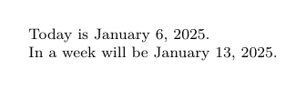
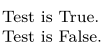

- \doifnextcharelse
- \doifundefined , \doifdefined , etc.
- \doif , \doifnot , \doifelse
- \doifempty , \doifnotempty , \doifemptyelse
- \doifinset , \doifnotinset , \doifnotinsetelse
- \doifcommon , \doifnotcommon , \doifcommonelse
- \doifsamestringselse , \doifsamestring , \doifnotsamestring
- \doifinstringelse , \doifincsnameelse
- \doifnumberelse
- \doifassignmentelse
- \doiftext , \doiftextelse — empty string
- \doifrightpageelse (precede by \signalrightpage )
- \doifdocumentargument
- \doifelseindented (LMTX only)
Examples
Example 1: Date Macro
-
\startTEXpage[offset=5mm] %--- Commands Needed %\setvariable{NAME}{KEY}{VALUE} => \getvariable{NAME}{KEY} %\defineexpandable[n] %\doifnumberelse{TEXT}{TRUE_CASE}{FALSE_CASE} \defineexpandable[1]\notToday{% \start\dorecurse{#1}{\increment\normalday}\currentdate\stop% }% \defineexpandable\Date{% \doifnumberelse{\getvariable{Document}{Date}}{\notToday{\getvariable{Document}{Date}}}{\currentdate}% }% \setvariable{Document}{Date}{today} Today is \Date. \setvariable{Document}{Date}{7} In a week will be \Date. \stopTEXpage
- 
Example 2: Using Lua
We can also write tests using Lua. (Example by WS, 3/2011.)
-
\startTEXpage \ctxlua{test = true} Test is \ctxlua{commands.doifelse(test)}{True}{False}. \ctxlua{test = false} Test is \ctxlua{commands.doifelse(test)}{True}{False}. \stopTEXpage
- 
See also
Help from ConTeXt-Mailinglist/Forum
All issues with: